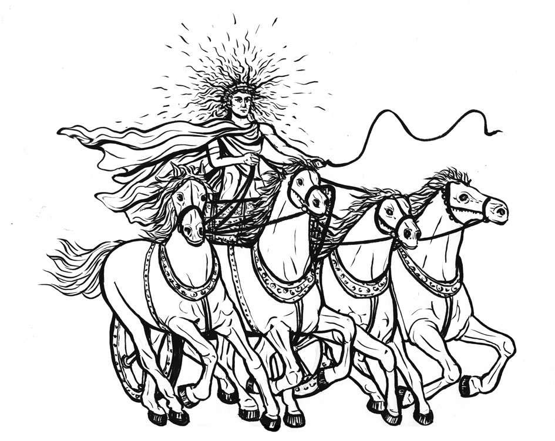

树木每年从夏天开始生长，于寒冷的冬季停止，然后长出一圈新年轮。如果年轮很窄，说明树木在这一年长得不够快，反之则说明长得很快。年轮可以帮助我们了解树的年龄，判断某些年份的气候状况。
目前已知的最古老的树有个恰如其分的名字——玛士撒拉（Methuselah，意为高寿的人）。这是一棵生长在美国加利福尼亚州因约肯的大盆地狐尾松，2013年它的预估年龄是在4 845岁到4 846岁之间。然而，据说在黎巴嫩巴特伦地区有一棵名为“姐妹树”（The Sisters）的橄榄树，它的年纪更大，约在6 000岁到6 800岁之间。
目前已知的最古老的树——玛士撒拉
人们常说的“菩提树”是一棵生长在斯里兰卡阿努拉德普勒 [1] 的神圣的无花果树，传说中佛陀是在这棵树的某一枝下开悟的。它种植于公元前288年，是至今仍存活的人类种植的最古老的树。
大多数古代宗教都把太阳奉为神明。新石器时代的人类祖先建造了各种伟大工程以纪念重大天文事件。古埃及人将太阳神称为“拉”（Ra）或“荷鲁斯”（Horus），是掌管天、地和水下世界的神。阿兹特克人将托纳提乌（Tonatiuh）当作太阳神和众神之首，需要借由活人献祭，才能确保太阳绕世界运行。希腊人的太阳神是赫利俄斯（Helios），他头戴太阳金冠，散发璀璨光芒，每天驾着日辇绕世界驰骋。

赫利俄斯，希腊神话中拟人化的太阳神
对崇拜太阳的人类祖先来说，每年有4个重要日子：春分（3月20日或21日）、夏至（6月20日或21日）、秋分（9月22日或23日）和冬至（12月21日或22日）。在欧洲，两座最重要的新石器时代遗迹是英格兰的巨石阵和爱尔兰的纽格莱奇墓，在建筑特色上，它们能够在夏至和冬至象征式地引导太阳之光。夏至是北半球一年中白天最长黑夜最短的一天，太阳在天空中的高度最高；冬至是北半球白天最短黑夜最长的一天，太阳位置最低；当太阳中心和赤道处于同一平面，太阳直射地球赤道时，称之为春分和秋分。
虽然人们并不明白为什么纪念冬至，但现在地球上大多数人依然在延续这一传统。圣诞节（每年12月25日）与冬至如此接近绝非巧合，这其实是基督徒特意借用了一个已有的异教节日，而复活节和春分之间的关系大概也是如此，故而这两个节日就像是基督徒和异教徒传统的奇特混合。
在西方，人们将一年划分为4个不同的季节（春、夏、秋、冬），四季与天气变化和动植物的行为变化相一致，通过二至点（冬至夏至）和二分点（春分秋分）进行简单划分。
但季节也因地理条件不同而有所差别。例如，印度将一年分为6个季节：热季、雨季、秋季、冬季、冷季和春季。非洲很多地方只有2个季节：旱季和雨季。古埃及人将一年分为3季：泛滥季、冬季和夏季，每季持续4个月。很长一段时间，古希腊人只有春季、夏季和冬季，不存在秋季。生活在条件更加极端的冰岛和斯堪的纳维亚半岛的日耳曼人只有2个季节：冬季和夏季。“春季”和“秋季”这两个词语和概念，是他们在与罗马人接触过程中才引入的。
在西方，大多数人都认为四季分别开始于3月（春）、6月（夏）、9月（秋）和12月（冬）。但在爱尔兰，四季会早一个月开始，这与古老节日的时间相一致——其中最出名的是5月1日的“五朔节”和11月1日的“萨温节”。直至今天，爱尔兰很多非基督徒还在积极地庆祝这些节日。
复活节计算方法
“Computus”在拉丁语中是“计算”的意思，在中世纪专指罗马教会计算复活节的方法。理论上，复活节是每年春分以后（3月21日）第一个月圆之后的星期日。复活节最早可能出现在3月22日，最晚可能出现在4月25日。